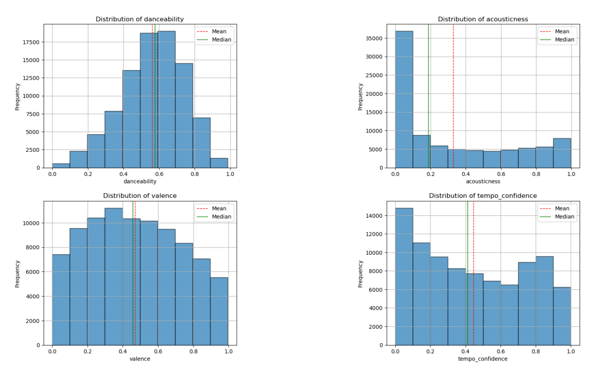
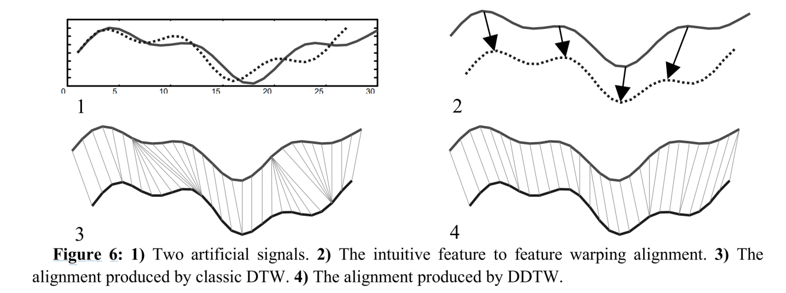
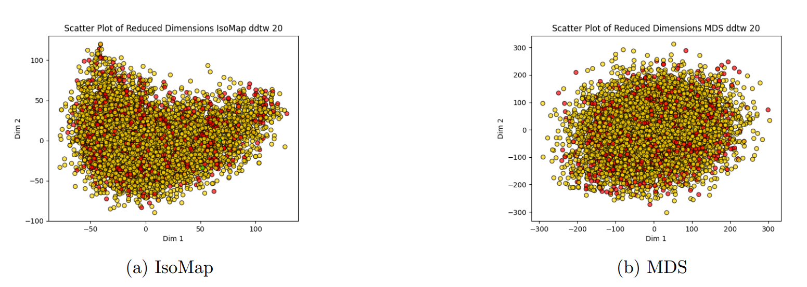

This project is an extension of the Data Mining I project. This project demonstrates advanced data mining techniques applied across multiple domains including time series analysis, classification, regression, and model explainability. Working with two interconnected tabular datasets, obtained through the spotify API, containing track features such as danceability, energy, acousticness, and artist metadata including popularity and follower counts, me and my team developed a complete data science pipeline from data understanding through advanced modeling and interpretation.
The datasets were merged to create an enriched view that combines track-level audio features with aggregated artist statistics. After extensive preprocessing including handling duplicate records with multiple genres, creating derived features like BeatPerMinute, and ensuring data quality through semantic consistency checks, the final dataset contained nearly 90,000 observations with 36 features.
Additionally, we worked with time series data representing 9,860 songs across 20 different genres, applying dimensionality reduction techniques and exploring temporal patterns in music.
This project provided extensive hands-on experience with advanced data mining methodologies and deepened my understanding of the complete machine learning workflow. Working with both tabular and time series data taught me the importance of careful data preparation and the significant impact that preprocessing decisions have on downstream analysis.
I gained practical expertise in time series approximation techniques, learning that PAA generally outperformed SAX for our music classification tasks, and understanding when to apply different distance metrics like DynamicTimeWarping and DerivativeDynamicTimeWarping . The classification experiments revealed that model performance is highly dependent on proper hyperparameter tuning and that ensemble methods like Random Forest and Gradient Boosting consistently delivered the best results, achieving accuracies around 22% on the challenging multi-class key prediction task.
The imbalanced learning section was particularly interesting, teaching me various resampling strategies and their trade-offs. I learned that Random Undersampling, despite its simplicity, can be effective when computational resources are limited. The neural network experiments highlighted the constant challenge of balancing model complexity with overfitting, and the importance of early stopping and regularization techniques.
Perhaps most valuable was the explainability work using LIME , LORE , and SHAP . These tools demonstrated that even with relatively modest prediction accuracy, we can extract meaningful insights about feature importance and model decision-making.
Finally, the project reinforced the importance of rigorous experimental methodology, including proper train-test splitting, cross-validation, and comprehensive metric reporting. The experience of working through challenges like computational constraints, class imbalance, and high-dimensional data taught me valuable problem-solving skills that extend beyond specific algorithms to general data science practice.
The project began with two primary datasets: a tracks dataset containing 36 features for music tracks and an artists dataset with 5 features about music artists. The tracks dataset included both nominal features like genre, name, and album information, and continuous features such as danceability, energy, acousticness, and tempo. Audio analysis features from Spotify's API provided technical measurements including loudness in decibels, tempo confidence, and time signature.
Data preparation involved several steps. We merged the two datasets by calculating mean popularity and follower counts for artists associated with each track, adding two new derived columns to the tracks dataset. A significant challenge was handling duplicate track IDs that appeared with different genre labels. These duplicates were consolidated by concatenating genre values with semicolon separators, preserving all genre information while ensuring record uniqueness.
We created a new BeatPerMinute feature by combining duration and beat count information, reducing dimensionality while preserving essential temporal characteristics. Statistical analysis revealed diverse distribution patterns across features: danceability showed a skewed normal distribution while valence appeared more uniform. The dataset exhibited generally well-behaved distributions without excessive concentration at specific points, though some features showed high variance as evidenced by large standard deviations relative to their means.
Data quality assessment included checking for semantic inconsistencies. We implemented similarity-based checking for album names from the same artists, flagging pairs with 85% or greater similarity. This revealed cases where albums had identical names with minor capitalization differences. Similar checks for artist names found no significant inconsistencies.
The time series component required additional preprocessing, including removing two files with non-standard lengths and handling 136 duplicate IDs by verifying file identity before removal, resulting in a balanced dataset of 9,860 time series across 20 genre folders.
Time series analysis formed a substantial portion of the project, exploring music data represented as sequential measurements. We implemented two approximation techniques to manage computational complexity: Piecewise Aggregate Approximation (PAA) and Symbolic Aggregate Approximation (SAX). After testing various interval counts, we settled on 256 intervals for both methods, finding this provided an optimal balance between pattern capture and computational efficiency.
For classification tasks, we employed multiple algorithms including K-Nearest Neighbors with specialized distance metrics, ROCKET transformers, and Canonical Interval Forest. A key innovation was implementing Derivative Dynamic Time Warping (DDTW) as a distance metric, which focuses on the shape of time series rather than absolute values, proving particularly effective for music data without temporal shifting.
The K-Neighbors classifier experiments tested 16 different k values ranging from 5 to 97, combined with three distance metrics across eight target variables. PAA approximation consistently outperformed SAX across most tasks. For genre classification, we achieved around 30% accuracy with PAA and DTW distance, while SAX only reached approximately 20%. The most successful predictions were for the speechiness feature, achieving over 93% accuracy with high precision, though recall remained a consistent challenge across all target variables.
Motif and shapelet discovery revealed recurring patterns in the music time series. Motifs typically exhibited steep positive or negative slopes and occurred at the beginning or end of sequences, while discords manifested as erratic subsections distributed throughout. We extracted seven shapelets representing discriminative subsequences for different genres including Synth-pop, Songwriter, Kids, Emo, Heavy-Metal, and Opera. These shapelets captured the essential temporal characteristics that distinguish musical genres.

Clustering experiments explored multiple approaches to group similar time series. K-means clustering with varying k values (3, 9, 20, 89, 91, 93) was tested using Euclidean, DTW, and DDTW distances. Results showed that PAA approximation with either Euclidean or DTW distance and low k values (3 or 9) produced the most promising outcomes, with silhouette scores reaching 0.42 for k=3. Higher k values proved computationally prohibitive for DTW and DDTW distances, and overall results remained modest.
Feature-based clustering extracted 783 features from time series using the TSFresh library's comprehensive feature calculator. We reduced dimensionality by selecting the top 100 features based on variance, eliminating constant features. Hierarchical clustering with various linkage methods (centroid, complete, single, average) and criteria (distance, maxclust) was applied. However, silhouette scores remained consistently poor, often negative, indicating weak cluster separation.
Dimensionality reduction techniques including Multidimensional Scaling (MDS), Isometric Mapping (IsoMap), and t-SNE were employed to visualize clustering results. We computed dissimilarity matrices using DTW and its Sakoe-Chiba constrained variant. While these techniques reduced computational complexity, the resulting 2D and 3D representations showed no clear cluster boundaries, consistent with the poor silhouette scores observed in the clustering analysis.
Sequential pattern mining using the Generalized Sequential Patterns (GSP) algorithm identified recurring temporal patterns in the PAA-approximated time series. With parameters set to minimum support of 0.85, maximum gap of 2, and minimum gap of 1, we discovered patterns of up to 4 consecutive values spanning up to 3 time steps. The high minimum support ensured that only frequently occurring patterns across 85% of the dataset were considered significant, revealing common structural elements in music time series across different genres.
Outlier detection employed an ensemble approach combining nine different methods: Elliptical Envelope, KNN-based outlier scores, Local Outlier Factor, DBSCAN, Cluster-Based Local Outlier Factor, Angle-Based Outlier Degree, Feature Bagging, LODA, and Isolation Forest. We implemented a three-round filtering process with increasing contamination factors (1%, 10%, 20%), requiring outliers to be flagged by all nine methods to be considered true outliers.
The conservative 1% contamination yielded zero matching outliers, while 10% identified 163, and 20% found 715 outliers. We selected the 20% contamination level as optimal, providing approximately 1% of the total dataset as outliers. Dimensionality reduction using t-SNE on k-means cluster medoids (k=5,000 and k=10,000) revealed that detected outliers concentrated on the periphery of the data distribution, with the central core remaining untouched, validating the effectiveness of the ensemble approach.
Imbalanced learning addressed the key feature's uneven distribution (ranging from 2,737 to 10,461 samples across 12 classes). We tested multiple resampling strategies including Random Undersampling, Condensed Nearest Neighbor, Tomek Links, Edited Nearest Neighbors, Cluster Centroids, Random Oversampling, and SMOTE. Each method was evaluated using decision trees with extensive hyperparameter grids including criteria (entropy, gini), max depths, minimum samples for splitting and leaves, and pruning parameters.
Results across different balancing methods remained remarkably consistent, with accuracy around 14%, precision 4.5%, recall 11.6%, and F1 scores 6.7%. The consistency suggested that the modest performance was inherent to the task's difficulty rather than specific to balancing methods. We selected Random Undersampling for subsequent analyses due to its computational efficiency and stochastic nature, reducing all classes to 2,189 samples (the minimum class size).
We employed multiple sophisticated algorithms on the balanced dataset to predict the "key" feature. Logistic Regression with 10-fold cross-validation explored penalties (L2, None), tolerances, regularization strengths, solvers (lbfgs, saga), and maximum iterations. The optimal configuration used L2 penalty, tolerance 0.0003, C=3, saga solver, and 100 iterations, achieving test accuracy of 12.52%, precision 15.61%, recall 11.06%, and F1 score 11.29%.
Support Vector Machines investigated both linear and non-linear kernels. Linear SVM with One-vs-Rest strategy and low regularization (C=0.001) achieved only 12.8% accuracy. Non-linear SVM with RBF kernel, high C (10), and high gamma (10) performed slightly better at 16% accuracy, indicating the dataset's complex non-linear relationships. Support vectors visualized using t-SNE revealed decision boundaries struggling to separate the 12 key classes effectively.
Neural networks utilized Keras Tuner with Bayesian and Hyperband search strategies exploring 1-5 fully connected layers, 12-48 units per layer, activation functions (sigmoid, tanh, relu), optimizers (SGD, Adam), and learning rates. Early stopping and model checkpoints prevented overfitting. The best five models achieved accuracies between 12.7-13.2%, with convergence occurring in few epochs. The consistent performance across architectures suggested the models reached a fundamental limit for this classification task given the available features.
Ensemble methods provided the best classification results. Random Forests with 100-500 estimators and various minimum sample parameters achieved 20% accuracy with 19% F1 score. Bagging with Random Forests and 30 estimators reached 22% accuracy and 22% F1 score. AdaBoost with 500 Random Forest base learners and 500 boosting iterations also achieved 22% accuracy and 22% F1 score. Gradient Boosting Machines with 75 estimators, maximum depth 15, learning rate 0.1, and log loss criterion delivered the strongest results: 18.07% test accuracy, 19.87% precision, 16.6% recall, and 18.72% F1 score.
| Method | R² | MSE | RMSE | MAE |
|---|---|---|---|---|
| Random Forest | 0.322 | 29.2T | 5.4M | 2.1M |
| Gradient Boosting | 0.283 | 30.9T | 5.6M | 2.2M |
Regression analysis predicted the continuous artists followers mean feature from track characteristics including explicit content, popularity, danceability, energy, mode, speechiness, acousticness, instrumentalness, liveness, valence, and BPM. Two ensemble regression methods were compared: Random Forest and Gradient Boosting Regressors.
Random Forest Regressor grid search explored maximum depths (None, 2-20 by 2s), minimum samples to split (2, 5, 10), and minimum samples per leaf (1, 2, 4, 8). The optimal configuration used no maximum depth restriction, minimum 2 samples for splitting, and minimum 2 samples per leaf. This unrestricted depth suggested the model benefited from capturing complex decision boundaries in the data.
Gradient Boosting Regressor grid search tested learning rates (0.01, 0.1, 0.2), number of estimators (50, 75, 100), maximum depths (3-11), and minimum samples to split (2, 4, 6). The optimal model used 100 estimators, maximum depth 11, learning rate 0.1, and minimum 2 samples to split. The moderate learning rate balanced convergence speed with stability, while the deep trees (depth 11) captured complex non-linear relationships.
Comparative evaluation revealed Random Forest as the superior model, performing marginally better across all metrics. While both models showed relatively low R² values, indicating that predicting follower counts from audio features remains challenging, Random Forest demonstrated better generalization with test performance more consistent with validation results.
Model explainability techniques were applied to the Logistic Regression classifier to understand its decision-making process. We examined a single randomly selected test instance (index 112) with true class 8 (correctly predicted) using three complementary explainability methods: LIME, LORE, and SHAP.

LIME (Local Interpretable Model-agnostic Explanations) provided local explanations by perturbing the instance and observing model reactions. The analysis revealed that n_beats was the most influential feature for predicting "key" 8, with the instance's value of 287 beats strongly supporting this classification. Additionally, LIME showed that when mode equals 1, the model presumed the key would not be 8, providing insight into the model's logical rules.

LORE (LOcal Rule-based Explanations) extracted interpretable rules by analyzing coefficient patterns. Setting a threshold of 0.6 (above random baseline 0.5), LORE generated rules showing that mode values greater than 0.01 and time signature values greater than 0.595 were associated with key 8. These rules aligned with LIME's findings about mode importance and revealed time signature as another critical feature for this classification.

SHAP (SHapley Additive exPlanations) employed game theory principles to assign feature importance scores. The analysis confirmed n_beats as the most important feature, consistent with LIME and LORE findings. Loudness emerged as another highly influential feature for the classification decision. Uniquely, SHAP revealed that valence had a negative impact on key prediction, meaning decreasing valence values decreased the predicted key value. The SHAP summary plot visualized feature importance across the dataset, showing n_beats and loudness as consistently impactful, while the waterfall plot for the specific instance illustrated how features contributed additively to the final prediction.
The convergence of insights across all three methods validated the reliability of the explanations. The complementary nature of the techniques provided a comprehensive understanding: LIME offered intuitive local explanations, LORE provided clear decision rules, and SHAP delivered rigorous feature attribution. This multi-method approach demonstrated that even with modest prediction accuracy (around 12-18%), the models captured meaningful relationships between audio features and musical keys.
The project successfully demonstrated a comprehensive data mining pipeline applied to music data, achieving several significant outcomes. The time series classification experiments revealed that PAA approximation generally outperformed SAX, with K-Neighbors achieving up to 30% accuracy for genre prediction and over 93% for speechiness classification. The consistent challenge of low recall across target variables highlighted the difficulty of capturing all instances of each class in such a complex, multi-class problem.
Advanced classification methods progressively improved performance, with ensemble techniques delivering the best results. Random Forest and AdaBoost both achieved 22% accuracy on the key prediction task, while Gradient Boosting reached 18.07% accuracy with the most balanced precision-recall trade-off. While these accuracies may seem modest, they significantly exceeded random baseline performance (8.33% for 12 classes) and revealed meaningful patterns in the relationship between audio features and musical keys.
The regression analysis successfully predicted artist follower counts with R² of 0.322 using Random Forest, explaining nearly one-third of the variance from track features alone. This demonstrated that audio characteristics contain non-obvious signals about artist popularity. The project also validated the effectiveness of ensemble outlier detection, identifying 715 outliers (approximately 1% of data) through the agreement of nine different methods.
From a methodological perspective, the project highlighted several important insights: the superiority of ensemble methods for complex tasks, the importance of proper hyperparameter tuning through systematic grid search, and the value of multiple evaluation metrics. The explainability analysis proved particularly impactful, showing that features like beat count, loudness, time signature, and mode play crucial roles in musical key determination, providing interpretable insights even when prediction accuracy is modest.
The comprehensive nature of the project demonstrated proficiency across the full spectrum of data mining techniques, from foundational data preparation through advanced modeling and interpretation. The GitHub repository provides reproducible code for all analyses, contributing to open science practices. The work has implications for music recommendation systems, automated music analysis tools, and understanding the relationship between audio features and higher-level musical constructs.
The project encountered numerous technical and methodological challenges. Computational constraints posed the most persistent difficulty, particularly with time series analysis using DTW and DDTW distances. For high k values in K-means clustering (89, 91, 93), these distance calculations proved computationally prohibitive. We addressed this by pre-computing distance matrices for K-Neighbors classification and limiting the scope of clustering experiments to feasible parameter ranges.
Managing the large time series dataset required strategic approximation. Initial experiments revealed that full-resolution time series (length 1,280) were too computationally expensive for comprehensive analysis. We systematically tested PAA and SAX approximations with various interval counts, ultimately selecting 256 intervals as the optimal balance. This reduced dimensionality by 80% while preserving essential pattern information, enabling classification and clustering experiments that would otherwise be impossible.
The imbalanced nature of the key feature (ranging from 2,737 to 10,461 samples across 12 classes) presented significant modeling challenges. We implemented and compared seven different resampling techniques, discovering that results remained consistent across methods. This led to selecting Random Undersampling for efficiency, though it meant sacrificing data volume. The consistent poor performance across resampling approaches ultimately suggested that the task's difficulty stemmed from inherent complexity rather than class imbalance alone.
Neural network training revealed a tendency toward overfitting, with models converging in very few epochs. We addressed this through multiple strategies: implementing early stopping with patience parameters, using model checkpoints to save the best performing version, experimenting with simpler architectures (1-5 layers with 12-48 units), and adjusting learning rates and regularization. Despite these efforts, we found that the models reached a performance ceiling quickly, suggesting fundamental limitations in the features' ability to predict the target variables.
Data quality issues required careful handling. The duplicate IDs in the time series dataset could have corrupted analysis if not properly addressed. We implemented a verification process to confirm that files with matching IDs were truly identical before removing duplicates. The multiple genre labels for single tracks required innovative handling by concatenating values rather than arbitrarily selecting one, preserving complete information. Semantic inconsistencies in album names were identified through fuzzy matching and corrected through manual verification.
The clustering analysis consistently produced poor results with negative silhouette scores, indicating weak cluster separation. Rather than forcing interpretations, we acknowledged these limitations and explored alternative approaches including feature-based clustering and dimensionality reduction for visualization.
This comprehensive data mining project successfully explored music data through multiple analytical lenses, demonstrating the complete lifecycle of a data science project from initial data understanding through advanced modeling and interpretation. Working with nearly 90,000 tracks and 9,860 time series across 20 genres, we applied cutting-edge techniques in time series analysis, classification, regression, clustering, and model explainability.
The project validated several important principles: ensemble methods consistently outperform individual classifiers, proper data preparation and feature engineering are crucial for success, and multiple evaluation metrics provide more reliable assessment than any single measure. The explainability analysis proved that interpretability and predictive performance are not mutually exclusive, with LIME, LORE, and SHAP providing complementary insights into model decision-making.
While achieving perfect prediction accuracy on such complex tasks remains elusive, the project successfully identified meaningful patterns in the relationships between audio features and musical attributes. The Random Forest and Gradient Boosting models for both classification and regression tasks demonstrated practical applicability, with performance well above baseline levels. The feature importance analyses revealed that temporal characteristics (beat counts), audio properties (loudness, energy), and melodic aspects (mode, key) all contribute to defining musical identity.
The rigorous experimental methodology, comprehensive documentation, and reproducible code in the GitHub repository ensure that these findings can be validated, extended, and built upon by future researchers. The project demonstrates proficiency across the full spectrum of data mining techniques and provides a template for approaching complex, multi-faceted data analysis challenges in real-world domains.